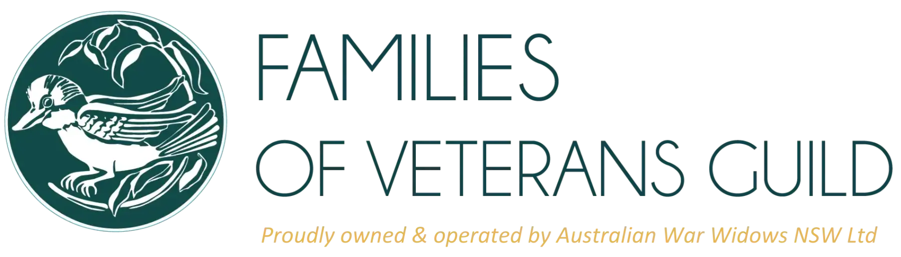

<nav class="navbar navbar-expand-md shadow sticky-top bg-white">
    <div class="container">
        <a class="navbar-brand" [routerLink]="'./home'" (click)="isMenuCollapsed = true; gotoTop()">
            
        </a>

        <button class="navbar-toggler rounded-1" type="button" (click)="isMenuCollapsed = !isMenuCollapsed">&#9776;</button>

        <div [ngbCollapse]="isMenuCollapsed" class="collapse navbar-collapse">
            <ul class="navbar-nav mx-auto mb-2 mb-lg-0">
                <!-- <li class="nav-item">
					<a class="nav-link" [routerLink]="'.'" (click)="isMenuCollapsed = true">Home</a>
				</li> -->
            </ul>
            <form class="d-flex">
                <a href="https://familiesofveterans.org.au/" target="_blank" class="btn btn-outline-success rounded-1" (click)="isMenuCollapsed = true; gotoTop()">
                    Home
                </a>
                <button class="btn btn-danger mx-2 rounded-1" type="button" [routerLink]="'./addNew'" (click)="isMenuCollapsed = true; gotoTop()">
                    <i class="fa fa-plus me-1" aria-hidden="true"></i>
                    <span>Add Tribute</span>
                </button>
                <button class="btn btn-warning rounded-1" type="button" [routerLink]="'./donateNow'" (click)="isMenuCollapsed = true; gotoTop()">
                    Donate Now
                </button>
            </form>
        </div>
    </div>
</nav>